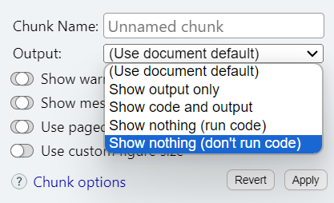

year <- 2024R, RStudio, & Rmarkdown
Part 1: R
R is an Interpreted Language
- code or programs you write execute in real time
- by he
Rinterpreter that translates your code - code does not need to be compiled prior to being executed
R involves functional programming
- https://en.wikipedia.org/wiki/Functional_programming
- programs are constructed by applying and composing functions
- functions:
mean()dplyr::summarize()
Some basics
numeric objects (e.g.,
2024,21.2)strings/character objects:
- composed of letters
- enclosed by quotes (e.g.,
"Sam","Male","21")
vector objects:
- collections of objects (e.g.,
c("18", "23", "20"))
- collections of objects (e.g.,
data frames:
- collections of vectors
Some basics (cont.)
- we assign objects to names/names to objects
ages <- c("18", "23", "20")
- we perform functions on objects:
as.numeric(ages)- often by assigning or reassigning:
ages <- as.numeric(ages)
Some basics (cont.)
- we inspect object contents
ages- and get something returned:
[1] 18 23 20
- we perform more functions on objects:
mean(ageas.numeric(ages))[1] 20.33333
- we model data frames
Open RStudio
- find the Console
- find the Terminal
- find ‘environment’ in pane
- find ‘history’ in pane
- find ‘help’ in pane
- find ‘files’ in pane
- find ‘plots’ in pane
Write some code in the R console
code
year <- 2024- assign objects to names using
<-, not=
Write more code in the R console
ages <- c(18, 22, 24)code
ages <- c(18, 22, 24)[1] 18 22 24
Part 2: RStudio
Beyond the console
RStudio
- IDE for using
R - make for a better coding experience
- lots of extras
- better UI, markdown, Terminal, Git, code snippets
Part 3: R Markdown
R Markdown
Markdown is a lightweight markup language used for adding formatting elements to plain text text
R Markdownis a markdown language create forRandRStudioAllows you to dress up text, embed and render code, reference hyperlinks, etc. within a written document
Libraries like {rmarkdown} and {knitr} help you build
HTML,pdf, andWorddocuments that update automatically with new data
Create an R Markdown File
- Create directory/folder named:
fods24 - File > New File > R Markdown
- Name it:
my_first_markdown.Rmd - Save in:
/fods24 - NOTE: Directories will be addressed for next week!
Write some text in the R Markdown File
My name is X and the year I start learning R is Y.
Dressing up Text
- Italics: wrap text in
*- *italics*
- Bold: wrap text in
**- **bold**
- Bold Italics: wrap text in
***- ***bold italics***
Insert and Embed Code Block
```{r}
```Windows: CLTR+ALT+I
Mac: COMMAND+ALT+I
Create Code in Block: Assign value to year
```{r}
year <- 2024
```code
year <- 2024Code block settings

Create a code block + write some code
```{r}
band <- "your favorite band"
state <- "the state in which you grew up"
name <- "your name"
```Embed code in-line (inside text)
- If you have an object in
R - You can render the object in text
- And dress up the text
Embed code in-line (inside text)
- If you have an object in
R - You can render the object in text
- And dress up the text
The year is `r year`!Embed code in-line (inside text)
- If you have an object in
R - You can render the object in text
- And dress up the text
The year is `r year`!The year is 2024!
Modify your text in the R Markdown File
- make the year change by using inline code
- make sure your inline code is after you assign the object
Add header sections and subsections using #
# About me
## My favorite band
### My favorite band from the 1990s
Insert hyperlinks
[message](url)
[cheatsheet](https://gabrielcook.xyz/fods24/cheatsheets/rmarkdown-2.0.pdf)
Knitting R Markdown Files
- As
HTML - As
pdf - As
Word
Locate the HTML file
my_first_markdown.html